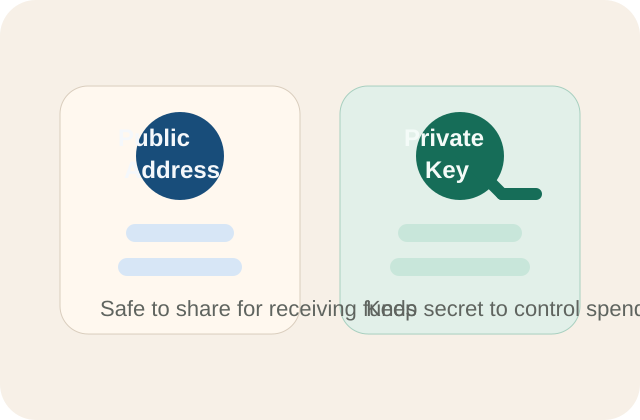
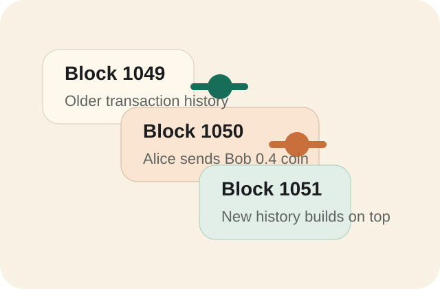

It is not just “coins”
A cryptocurrency network is a set of computers following the same transaction rules and ledger history.
Visual explainer
Instead of a bank updating one private ledger, many computers keep copies of the same record, check each other’s work, and agree on which transactions count.
Wallet A
asks to send 0.4 coin
Pending block
network checks the request
Final ledger
all copies update
Core idea
Crypto assets are digital tokens tracked by software rules. Ownership is usually defined by who can prove control of a private key, not by possession of a physical object.
A cryptocurrency network is a set of computers following the same transaction rules and ledger history.
Anyone can often inspect transfers on-chain, even if real names are not directly attached.
The network rejects invalid transfers, such as spending funds from an address without the right signature.
Transaction flow
A blockchain is a history of transaction batches called blocks. Each new block points back to the previous one, creating a chain that is difficult to rewrite.
Alice’s wallet creates a message saying “send 0.4 coin to Bob.”
The signed message spreads to many nodes on the network.
Nodes verify the signature, balance rules, and transaction format.
Validators or miners gather valid transactions into a candidate block.
Once accepted, the block is appended and Bob’s balance reflects the change.
Control and custody
A wallet usually stores or manages keys, not the coins themselves. The coins stay on the shared ledger; the wallet proves you are allowed to move them.

Like an account number you can share so others know where to send funds.
Like a secret signing power. If someone gets it, they can usually move funds.
You control the keys. More freedom, but losing the secret can mean losing access.
The platform often controls the keys for you. Easier for beginners, but adds platform risk.
Consensus
The network needs a rule for deciding which block becomes the official next block. Different chains solve this in different ways.
In proof-of-work systems, miners spend computing power competing to add the next block. That cost is meant to make cheating expensive.
In many newer systems, validators lock up assets as stake. If they follow the rules, they earn rewards; if they cheat, they can be penalized.
It is the network’s way of answering: “Which transactions happened, and in what order, without trusting one single operator?”
Programmable rules
A smart contract is code stored on-chain that runs when triggered. It can hold assets, enforce conditions, and act as a shared program many users can interact with.
“Release payment only if two people approve” or “swap token A for token B at a published rule set.”
It enables things like decentralized exchanges, lending apps, collectibles, and automated business logic without a traditional central server approving each step.
If the code has a bug, users may not be able to reverse the damage. “Code is law” is powerful, but unforgiving.
Tradeoffs
Crypto can offer portability, transparency, and programmable money. It also creates new kinds of operational and financial risk.
Many assets swing wildly in value, which can make them poor short-term stores of value.
Send to the wrong address or lose your keys, and there may be no customer support rescue.
Fake tokens, phishing, exchange failures, and contract exploits are common enough to treat as normal risk.
Busy networks can become expensive or slow, especially for small payments.
Some systems consume large amounts of energy; others drift toward a few dominant operators.
Rules differ by country and can change, affecting taxes, custody, and what platforms can offer.
Bottom line
It combines networking, cryptography, incentives, and software rules to let many parties agree on asset ownership without one central ledger owner. That makes some things possible, but it does not remove risk. It mostly changes where the risk lives.
